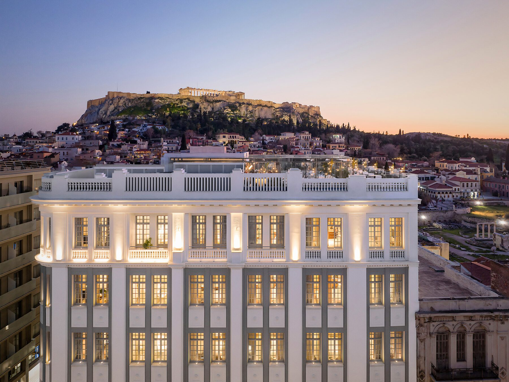
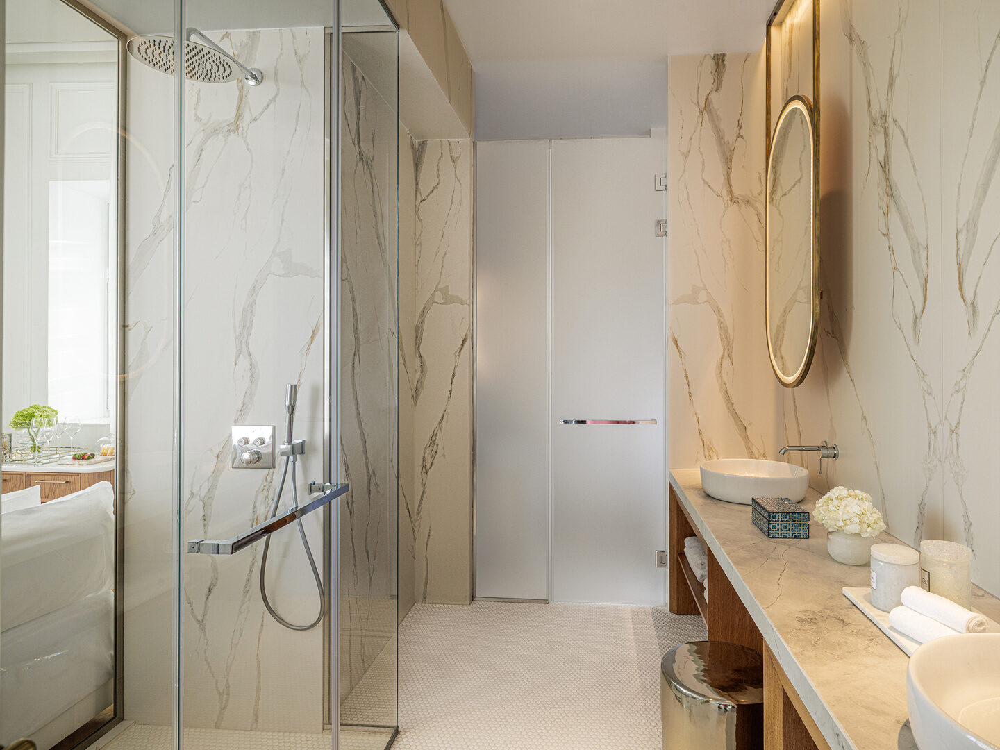
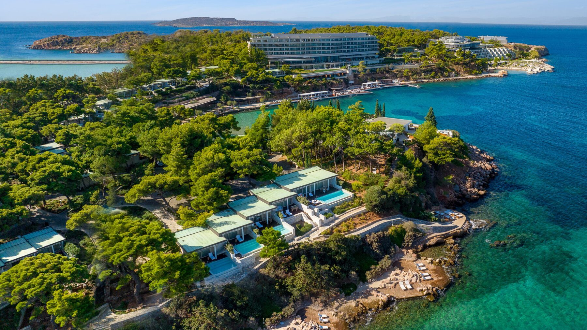
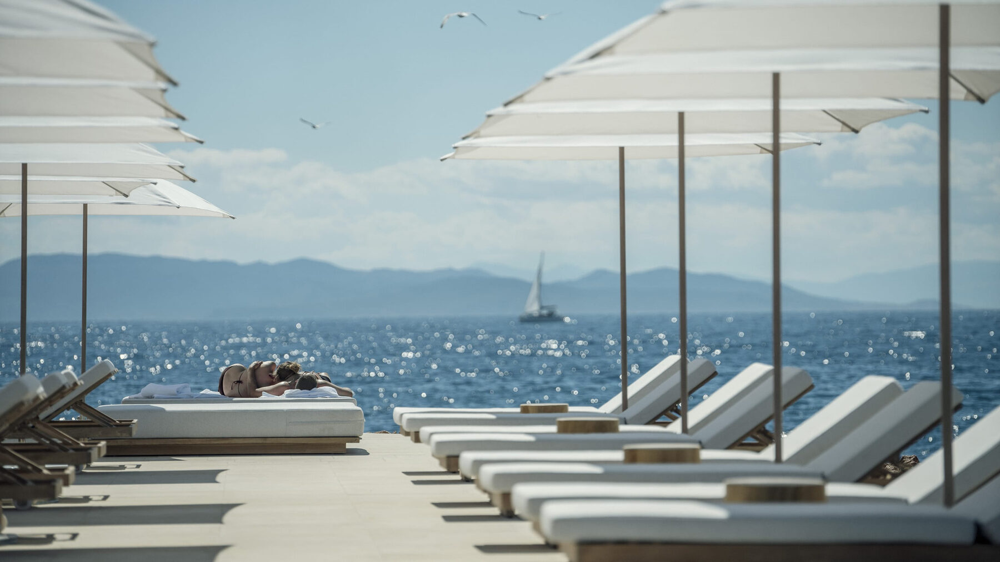
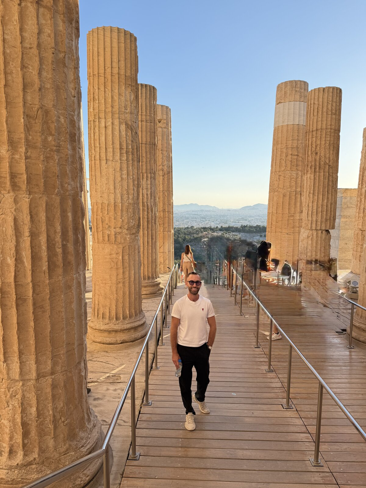

The Greece Collection · Issue No. 01
07A city that reminds you why people have been coming here for centuries.
Beat the crowds and bring ancient Athens to life with an expert guide.
Wander the winding streets after sunset when the neighborhood feels its most magical.
Experience Athens' thriving culinary scene with views of the illuminated Acropolis.
Combine the city with beach clubs, seaside restaurants, and luxury resorts just outside the center.
Athens is best explored on foot around the historic center, while taxis are inexpensive for longer trips. If you're planning time along the Athens Riviera, renting a car isn't necessary unless you're continuing your journey beyond the city.
Most people treat Athens as a gateway to the islands. I think that's a mistake. Give yourself two or three nights and you'll discover one of Europe's most exciting food cities, incredible luxury hotels, and neighborhoods that feel completely different from one another. It's the perfect way to begin or end a trip through Greece.
Luxury hotels within walking distance of Athens' major landmarks.
Historic streets, charming boutiques, and lively restaurants.
Beachfront luxury with easy access to the city.

The city's most beautiful view
Few hotels have transformed Athens' luxury scene like The Dolli. Housed inside a restored neoclassical mansion overlooking the Acropolis, it blends residential elegance with impeccable service and one of the most spectacular rooftop pools in Europe. Every space feels thoughtfully curated, making it as much a design destination as it is a hotel.
Reserve a private guide for the Acropolis. Touring the ancient sites with an expert completely changes the experience, and you'll appreciate being able to walk back to the hotel afterward.
Take a taxi to Kallithea for lunch. I had my favorite gyros in all of Greece there, and it's a reminder that some of Athens' best food is found well beyond the tourist center.
Save one evening for the rooftop. Whether it's cocktails before dinner or a leisurely breakfast the next morning, The Dolli's view of the illuminated Parthenon is reason enough to slow down.
If someone asks me where to splurge in Athens, The Dolli is usually my first answer. Between the rooftop, the location, and the design, it's one of the most memorable hotel experiences in Greece.


Where Athens meets the sea
Four Seasons Astir Palace proves Athens isn't just a city destination. Set along a private peninsula overlooking the Saronic Gulf, it combines world-class dining, multiple beaches, and resort-style luxury just thirty minutes from the Acropolis. It's the perfect balance of city access and a true seaside escape.
Spend an afternoon at the beach club. Astir's private coves are one of the Riviera's biggest advantages and deserve more than a quick swim.
Reserve dinner at Pelagos. It's one of the best Michelin-starred meals in Greece and worth planning your evening around.
Explore Vouliagmeni. Walk to the lake or enjoy dinner in town before returning to the calm of the peninsula.
Astir Palace feels like two vacations in one. Spend your mornings by the sea, your afternoons exploring Athens, and return each evening to one of Europe's finest urban resorts. Few hotels balance city and beach this effortlessly.

How I'd spend three unforgettable days in Greece's vibrant capital.

Start early with a private guide through the Acropolis before the crowds arrive, then continue to the Acropolis Museum. Wander the streets of Plaka and Anafiotika before spending the afternoon shopping in Kolonaki. End the day with rooftop cocktails overlooking the Parthenon followed by dinner at one of the city's standout restaurants.
Spend the day along the Athens Riviera. Relax at one of the city's beautiful beachfront resorts, enjoy a long seaside lunch, then stroll Astir Marina before dinner overlooking the Saronic Gulf.
Start the morning with coffee in Pangrati before browsing the boutiques of Kolonaki. Head to Kallithea for what ended up being my favorite gyros in Greece, then spend the afternoon wandering the National Garden or visiting the Stavros Niarchos Foundation Cultural Center before one final dinner beneath the Acropolis.
Don't rush through Athens on your way to the islands. Give the city at least two full days and you'll discover some of Greece's best hotels, restaurants, and cultural experiences.